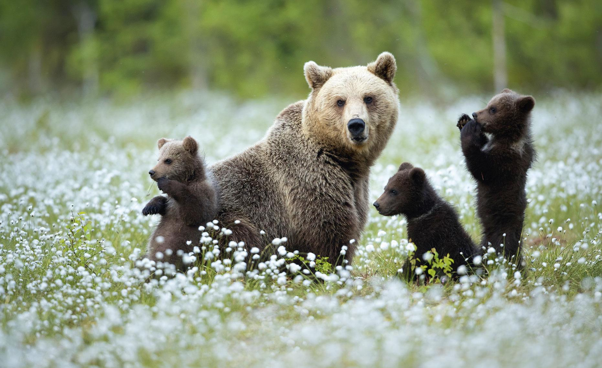

BJÖRN
Kroppsbyggnad
Björnarna har en kraftig kroppsbyggnad. Kraniet är tämligen kompakt med kraftiga muskelfästen. De är hälgående (med undantag för jättepandan och glasögon som sätter ned hela foten), med fem tår på varje fot. Den kraftigaste tån är till god hjälp för såväl klättrande i träd som till att gräva fram föda ur träd, termistackar med mera. Luktsinnet är välutvecklat hos björnarna. Flertalet arter är dagaktiva, men undantag för kragbjörnen och jättepandan som båda är nattaktiva. Bland rovdjuren är björnarna de som är mest anpassade till en blandad diet av animalisk och vegetabilisk föda - jättepandan lever enbart av växter. Kindtänderna är trubbiga och således anpassade för att mala mer än att skära födan.
Närmaste släkting
Björnarna är närmast besläktade med hundar och tvättbjörnar. Om man betraktar en liten vit golden retrievervalp så ser man stor likhet med en liten isbjörnunge. Björnarnas systematik är svår, vilket har resulterat i att många olika vetenskapliga namn har florerat på arterna. Det har även varit växlande uppgifter om jättepandans systematiska placering - björn eller halvbjörn. I äldre litteratur före 1995 indelade man familjen Ursidae i två underfamiljer - de egentliga björnarna Ursinae med 7 arter, och halvbjörnar Ailurinae dit jättepandan hörde. Namnet Ursidae kommer från det latinska ordet ursus som helt enkelt betyder björn. Ordet ursus i olika böjningsformer förekommer frekvent i en del av de vetenskapliga namnen. Vårt svenska ord björn, härstammar från fornsvenskans biorn, och är troligtvis besläktat med likaartade germanska ord som betyder brun.
Hot & skydd
Tidigare var det enbart människans jakt som hotade björnarna. Nu har även uppodlingen av skogsmarker till jordbruksarealer i kombination med miljöförstöringarna minskat björnas livsrum. Illegal jakt förekommer fortfarande dessvärre. För att skydda djuren så finns alla björnarterna med i CITES-konventionen (Convention on International Trade in Endagered Species of Wild Fauna and Flora), som förbjuder all handel med hotade arter av djur, växter eller delar av dessa. Det är ett sätt att skydda björnarna.
Läs mer på NRM